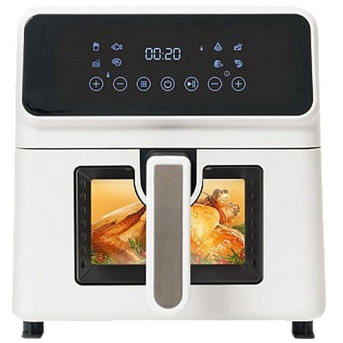
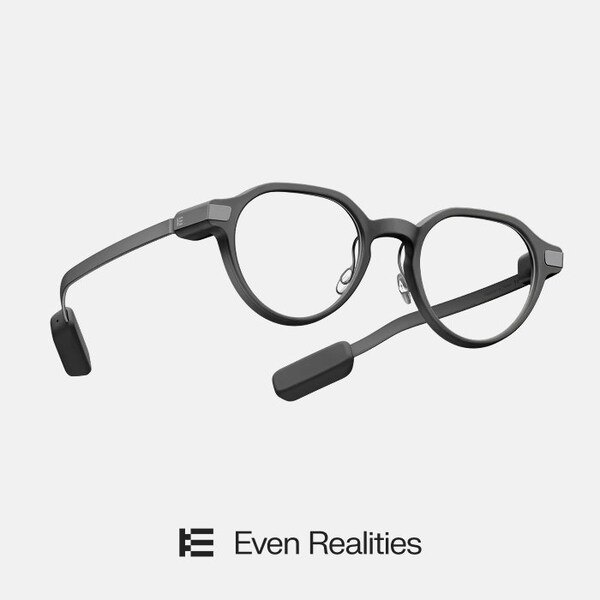

+11.5%
중국 주방 소형가전 평균가
양은 줄고 값은 오른다
판매량 −14.6%에도 평균가 상승. 국내 홈쇼핑은 로보락 450억·다이슨 헤어 300억.
신랑과기뉴스와이어(GS리테일)가전레이더
가전레이더는 국내외 가전 뉴스와 신제품, 다나와 인기순위·리뷰로 고른 AI가전·소형가전 MD 추천템을 매일 아침 7시에 정리합니다. 모든 수치에 매체와 날짜를 붙입니다.
2026년 가전의 공통 문법은 ‘수량은 줄고, 단가는 오른다’. 대형가전은 수익성 방어전, 소형가전은 프리미엄과 1인 가구, 그 사이를 AI가 잇습니다.
판매량 −14.6%에도 평균가 상승. 국내 홈쇼핑은 로보락 450억·다이슨 헤어 300억.
신랑과기뉴스와이어(GS리테일)닌자 크리스피, 아이닉 올스테인리스까지 ‘보이는 조리’가 대세.
@DIME@DIME다나와삼성 패밀리허브는 제미나이 탑재, LG는 로보틱스사업센터 신설.
환구망CEO스코어데일리디지털데일리여성 비중 61%, 20대 유입 증가. ‘미니냉풍기’ 검색은 역대 최고.
리스닝마인드·디아이투데이아이보스다나와 전기히터 인기 1·2위가 모두 같은 라인.
헤럴드코리아다나와화면 없는 모델이 96%. 삼성·구글은 12월 10일 국내 출시.
Android AuthorityCEO스코어데일리선정 기준: 다나와 카테고리 인기 5위 이내 · 리뷰 100건 이상 · 평점 4.7 이상 · 제조사가 밝힌 AI 기능

MD · 다나와 냉장고 인기 1위의 AI 모델. 폭 914mm가 들어갈 자리부터 재 보세요.
다나와 냉장고 인기 1위. 870L 4도어, 사용 패턴을 학습해 온도를 맞추는 AI 절약 모드, 에너지 1등급.
다나와 냉장고 인기 1위 · 리뷰 945 · 평점 4.8

MD · 사물·투명 액체 인식이 강점. 직배수형(VR90F01SAG)은 설치 여건을 먼저 확인하세요.
카메라로 사물과 투명한 액체까지 인식하는 AI 로봇청소기, 리뷰 763건.
다나와 로봇청소기 인기 2위 · CES 2026 AI 기능 · 리뷰 763 · 평점 4.7

MD · 지금이 김장철 성수기. 설치 폭 835mm와 기본 김치통 8개 구성을 먼저 확인하세요.
김장철 김치냉장고 인기 3위. 491L 4도어, 구입김치 스캔 보관·다목적 맞춤 보관, 에너지 1등급.
다나와 김치냉장고(스탠드형) 인기 3위 · 김장철 · 리뷰 464 · 평점 4.9

MD · 스팀 살균 스테이션이 차별점. 문턱이 많은 집이라면 최대 8.8cm 넘기 기능이 유리합니다.
흡입력 36,000Pa, 카메라·3D 인식 기반 AI 사물 인식, 물걸레 스팀 살균 스테이션.
다나와 로봇청소기 인기 5위 · 10월 신제품 · 리뷰 499 · 평점 4.8
[광고] ‘쿠팡에서 구매’ 링크는 쿠팡 파트너스 활동의 일환으로, 이에 따른 일정액의 수수료를 제공받습니다.

다나와 전기히터 1위. 같은 라인이 2위(리뷰 999+), 누적 260억 원.
다나와 전기히터 인기 1위 · 리뷰 839 · 평점 4.8
추천 대상 원룸·1인 가구, 인테리어를 신경 쓰는 20~30대, 반려동물 가정
차별점 TV를 닮은 레트로 큐브 디자인, 반사판형 히터

다나와 가습기 1위. 가습기는 11월 초가 온라인 구매 피크.
다나와 가습기 인기 1위 · 리뷰 69 · 평점 4.7
추천 대상 영유아 가정, 위생을 중시하는 30~40대
차별점 조지루시 STAN 디자인 라인의 가습기, 프리미엄 가격대

다이슨 2·3위 다음 4위, 6만 원대 대체 수요.
다나와 헤어드라이어 인기 4위 · 리뷰 535 · 평점 4.8
추천 대상 고속 드라이어를 원하는 20~30대 여성, 선물 수요
차별점 6만 원대 고속 드라이어, 높은 평점

다나와 AI 녹음기 1위, 공식 스토어 리뷰 999+·평점 4.82.
다나와 AI 녹음기 인기 1위 · 리뷰 999+ · 평점 4.82
추천 대상 회의·강의·통화가 많은 직장인, 기자·영업직
차별점 카드형 · 마이크 4개 · 녹음거리 5m · 112개 언어 전사·요약

다나와 AI 녹음기 2위, 공식 스토어 리뷰 999+·평점 4.77.
다나와 AI 녹음기 인기 2위 · 리뷰 999+ · 평점 4.77
추천 대상 들고 다니며 기록하는 1인 사업자, 학생
차별점 캡슐형 웨어러블 · 물리 버튼 · 17.5g

로봇청소기 1위, 2위의 약 3분의 1 가격.
다나와 로봇청소기 인기 1위 · 리뷰 999+ · 평점 4.9
추천 대상 가성비 올인원을 찾는 30~40대 맞벌이 가정
차별점 인기 1위 제품 중 50만 원대 가격

리뷰 934건 스테디셀러, 올스테인리스 내부.
다나와 에어프라이어 인기 3위 · 리뷰 934 · 평점 4.6
추천 대상 코팅 벗겨짐이 걱정되는 40~50대, 위생 중시 가정
차별점 내부 올스테인리스, 8만 원대

다나와 AI 스마트안경 1위. 화면 없는 AI 안경 출하의 94%가 메타.
다나와 AI 스마트안경 인기 1위 · 리뷰 1 · 평점 —
추천 대상 얼리어답터, 영상·사진을 자주 찍는 20~40대
차별점 Meta AI · 스피커 2개 · 마이크 6개 · 32GB
김장철 김치냉장고 인기 3위. 491L 4도어, 구입김치 스캔 보관·다목적 맞춤 보관, 에너지 1등급.
다나와 김치냉장고(스탠드형) 인기 3위 · 김장철 · 리뷰 464 · 평점 4.9
추천 대상 김장하는 3~4인 가구, 혼수·이사로 김치냉장고를 바꾸는 집
차별점 491L 4도어 4룸 · 구입김치 스캔 보관 · 다목적 맞춤 보관 · 에너지 1등급
다나와 냉장고 인기 1위. 870L 4도어, 사용 패턴을 학습해 온도를 맞추는 AI 절약 모드, 에너지 1등급.
다나와 냉장고 인기 1위 · 리뷰 945 · 평점 4.8
추천 대상 혼수·이사 수요, 대용량으로 바꾸려는 4인 가구
차별점 870L 4도어 · AI 절약 모드·AI 세이빙 모드 · UV청정+ · 에너지 1등급
흡입력 36,000Pa, 카메라·3D 인식 기반 AI 사물 인식, 물걸레 스팀 살균 스테이션.
다나와 로봇청소기 인기 5위 · 10월 신제품 · 리뷰 499 · 평점 4.8
추천 대상 반려동물·영유아 가정, 프리미엄 로봇청소기 교체층
차별점 AI 사물 인식 · 물걸레 스팀 살균 · 온수 세척·온풍 건조 · 문턱 4.5cm(최대 8.8cm)

4월 등록 신제품이 리뷰 396건·평점 4.9.
다나와 에어프라이어 인기 6위 · 리뷰 396 · 평점 4.9
추천 대상 대용량이 필요한 3~4인 가구, 가성비 중심 구매자
차별점 9L 용량을 6만 원대에

유리 용기 조리·보관. 일본 히트, 국내 리뷰 163건.
다나와 ‘닌자’ 인기 6위 · 일본 히트 · 리뷰 163 · 평점 4.8
추천 대상 1~2인 가구, 밀프렙·도시락족, 코팅을 꺼리는 소비자
차별점 유리 용기 하나로 조리·보관·재가열

스팀+에어프라이 결합, 중국도 같은 흐름.
다나와 에어프라이어 인기 5위 · 리뷰 284 · 평점 4.8
추천 대상 건강식·촉촉한 조리를 원하는 3~4인 가구, 40~50대
차별점 듀얼 스팀 + 에어프라이 조합

2년간 검색량이 늘어난 음식물처리기, 검증된 라인의 소형 모델.
다나와 음식물처리기 인기 5위 · 리뷰 37 · 평점 4.7
추천 대상 원룸·소형 주방의 1~2인 가구
차별점 검증된 플렌더 라인의 소형 모델

4개월 새 판매 약 4배, 겨울 수프 시즌과 일치.
일본 DIME 2026 히트 · 리뷰 수집 전 · 평점 —
추천 대상 아침 대용식을 찾는 1~2인 가구, 이유식 가정
차별점 자동 메뉴로 수프를 만드는 1만 엔대 블렌더

TikTok Shop 3월 전체 1위, 월 $6.12M.
TikTok Shop US 월 1위 · 리뷰 16,480대 판매(3월) · 평점 —
추천 대상 미국 숏폼 쇼핑 이용자, 반려동물 가정
차별점 틱톡 시연 영상과 결합한 무선청소기
카메라로 사물과 투명한 액체까지 인식하는 AI 로봇청소기, 리뷰 763건.
다나와 로봇청소기 인기 2위 · CES 2026 AI 기능 · 리뷰 763 · 평점 4.7
추천 대상 영유아·반려동물 가정, 프리미엄 로봇청소기 구매층
차별점 3D 사물 인식 · 투명 액체 감지 · 100℃ 스팀 살균

AI로 젖은 액체와 마른 이물을 구분해 진공·물청소를 한 번에.
다나와 등록 2026.01 · 권장가 179만 원 · 리뷰 317 · 평점 4.6
추천 대상 물청소까지 한 대로 끝내려는 프리미엄 구매층
차별점 AI 오염 식별 + 진공·물청소 겸용

다나와 AI 스마트안경 2위. ChatGPT·Gemini 모두 지원.
다나와 AI 스마트안경 인기 2위 · 리뷰 9 · 평점 —
추천 대상 해외 출장·여행이 잦은 직장인
차별점 49g · 1,200만 화소 · ChatGPT·Gemini 선택

다나와 AI 녹음기 4위, 10만 원대 웨어러블.
다나와 AI 녹음기 인기 4위 · 리뷰 수집 전 · 평점 —
추천 대상 AI 녹음기를 처음 써 보는 입문자
차별점 초소형 웨어러블 · 10만 원대

11월 등록 신제품이 바로 3위. 렌즈에 번역·길 안내를 띄우는 디스플레이형.
다나와 AI 스마트안경 인기 3위 · 이번 달 등록 · 리뷰 7 · 평점 —
추천 대상 통역·프롬프터가 필요한 발표자, 출장 잦은 직장인
차별점 디스플레이 탑재 · 실시간 번역 · 회의록 자동 작성

다나와 태블릿 전체 인기 1위. 11인치 120Hz AMOLED, IP68.
다나와 태블릿 인기 1위 · 리뷰 수집 전 · 평점 —
추천 대상 필기·영상용 프리미엄 태블릿을 찾는 학생·직장인
차별점 11인치 D-AMOLED 2X 120Hz · 디멘시티 9400+ · 12GB/128GB · IP68

다나와 무선 이어폰 인기 1위. 적응형 ANC, IP57.
다나와 무선 이어폰 인기 1위 · 리뷰 수집 전 · 평점 —
추천 대상 아이폰 사용자, 출퇴근 노이즈 캔슬링용
차별점 적응형 ANC · IP57 · ANC 켬 약 8시간 · 블루투스 5.3
10월 출시, ‘한 용기’ 흐름의 푸드프렙 확장.
미국 신제품 · 리뷰 수집 전 · 평점 —
추천 대상 밀프렙족, 샐러드·도시락을 직접 만드는 직장인
차별점 한 볼로 프렙·서빙·보관·휴대

세탁 25kg·건조 18kg을 한 대로 끝내는 올인원. AI 세탁건조·AI 에너지 절약·세제 스캔 정량 투입.
다나와 올인원 세탁건조기 인기 2위 · 리뷰 44 · 평점 4.8
추천 대상 세탁기·건조기를 나란히 둘 공간이 없는 신혼·소형 평형
차별점 세탁 25kg·건조 18kg 올인원 · AI 세탁건조 · 인버터 히트펌프 · 에너지 1등급

다나와 휴대폰 인기 2위. 6.3인치 120Hz, 엑시노스 2600.
다나와 휴대폰 인기 2위 · 리뷰 수집 전 · 평점 —
추천 대상 통신사 약정 없이 바꾸려는 갤럭시 사용자
차별점 6.3인치 120Hz · 엑시노스 2600 · 4,300mAh · 50MP 트리플

러닝 워치 스테디셀러. 다나와 스마트워치 인기 6위.
다나와 스마트워치 인기 6위 · 리뷰 수집 전 · 평점 —
추천 대상 러닝·마라톤 입문자와 기록 관리하는 러너
차별점 1.3인치 AMOLED · GPS · 5ATM · 최대 13일

소니 노이즈 캔슬링 헤드폰 최신작. 다나와 무선 헤드폰 인기 3위.
다나와 무선 헤드폰 인기 3위 · 리뷰 수집 전 · 평점 —
추천 대상 비행·출퇴근이 잦은 직장인, 음질 중시 사용자
차별점 적응형 ANC(QN3) · ANC 켬 30시간 · LDAC · 254g

다나와 무선 헤드폰 인기 2위. 출시가 51만 9천 원 대비 47% 낮습니다.
다나와 무선 헤드폰 인기 2위 · 리뷰 수집 전 · 평점 —
추천 대상 노이즈 캔슬링 헤드폰을 처음 사는 사람
차별점 적응형 ANC · ANC 켬 30시간 · 250g · USB-C

2026년형 16인치 갤럭시북 프로. 코어 울트라5 338H, 1.59kg.
다나와 AI 노트북 인기 16위 · 리뷰 수집 전 · 평점 —
추천 대상 갤럭시폰과 연동해 쓰는 직장인·대학생
차별점 16인치 2880×1800 · 코어 울트라5 338H · 16GB/512GB · 1.59kg

아이패드 기본형. 출시가 74만 9천 원 대비 현재 최저가 62만 원대.
다나와 태블릿 인기 10위 · 리뷰 수집 전 · 평점 —
추천 대상 아이폰 사용자, 인강·영상용 첫 아이패드
차별점 11인치 · A16 · 128GB · 최대 30W 충전

아이폰 기본형. 6.3인치 120Hz, A19, 48MP 듀얼.
다나와 휴대폰 인기 17위 · 리뷰 수집 전 · 평점 —
추천 대상 통신사 약정 없이 바꾸려는 아이폰 사용자
차별점 6.3인치 120Hz · A19 · 48MP+48MP · 맥세이프 20W

애플워치 입문형. 출시가 36만 9천 원 대비 현재 32만 원대.
다나와 스마트워치 인기 11위 · 리뷰 수집 전 · 평점 —
추천 대상 아이폰 사용자, 첫 애플워치
차별점 40mm LTPO OLED 1000nit · 18시간(저전력 32시간) · 64GB

갤럭시 버즈 프로 라인. 출시가 31만 9천 원 대비 31% 낮습니다.
다나와 무선 이어폰 인기 11위 · 리뷰 수집 전 · 평점 —
추천 대상 갤럭시폰 사용자, 노이즈 캔슬링 이어폰
차별점 적응형 ANC · ANC 켬 26시간 · IP57 · 블루투스 5.4

오픈형인데 ANC가 되는 에어팟4. 정품 기준 출시가 대비 33% 낮습니다.
다나와 무선 이어폰 인기 10위 · 리뷰 수집 전 · 평점 —
추천 대상 커널형이 불편한데 노이즈 캔슬링을 원하는 아이폰 사용자
차별점 오픈형 · 적응형 ANC · ANC 켬 20시간 · 블루투스 5.3
삼성은 가전·모바일 연결 생태계, LG는 홈과 산업을 나눠 전시.
전자신문CES 2026에서 식품 인식 범위를 넓힌 냉장고 공개.
CEO스코어데일리AWE2026에서 냉장고·세탁기·에어컨 Seeker 시리즈 공개.
환구망AI 제품군이 여러 품목에서 판매 상위.
신화망드리미는 16개 카테고리 100여 개 제품 전시.
유로모니터IFA 2026 공개, 조리 설정 자동 제안.
Digit국내는 젠틀몬스터 16종만 판매, 가격은 65만~70만 원.
CEO스코어데일리카운터포인트 집계. 화면 없는 모델이 96%, 그중 메타가 94%.
Android Authority디스플레이형은 약 3배 증가. 업계 관계자는 판매의 95%가 온라인이라고 말했다.
제일재경(第一财经)예상가 1,699위안, 번역·회의록 기능 탑재.
제일재경(第一财经)젠틀몬스터 모델은 449달러부터, 12월 10일 발매.
Impress Watch배송은 12월 중순부터.
Sammyfans이름·가격·기능은 아직 공개하지 않았다.
TechRepublic메타와 만든 AI 안경과 보청 안경을 합친 수치.
MIXED노트 프로 29만 8천 원, 노트핀 S 27만 9천 원.
다나와+9.5%. 마켓플레이스 매출은 약 25% 증가.
스페셜타임즈2년간 검색량이 늘어난 카테고리는 냉풍기·음식물처리기뿐.
리스닝마인드·디아이투데이11/16–11/29, 삼성·LG 등 참여.
지디넷코리아eMarketer 전망. 2분기 Top10에 가전 포함.
FastMossCrispi Microwave $449 · HydraSense $199.99 · PREPi $179.
SharkNinja싱글도즈 그라인더는 틱톡 바이럴 후 판매 22% 증가.
Boston 25 News글라스 에어프라이어 510%, 오토 스프 블렌더 약 4배.
@DIMEChillPill 핸디팬 크라우드펀딩 1.1억 엔+.
@DIME11.03–11.09 집계 카테고리 순위.
출처신제품이 성장의 핵심 동력.
퉁화순NIQ/GfK 글로벌 Tech & Durables 집계.
IFA 베를린 보도자료소형가전 매출의 45%가 온라인.
NIQ매출은 2개 분기 연속 7조 원대, 영업이익률은 9.7%에서 3.7%로.
비즈워치상반기 6천억 원에서 한 분기 만에 5배 이상.
연합뉴스(한민족센터)북미 대형가전 수요 부진. 소형가전(SDA)은 매출 보합에 이익률 상승.
Finanznachrichten(PR Newswire)대형은 하이얼·메이디·샤오톈어, 소형은 메이디·로보락·쑤포얼이 상위.
21세기경제보도2026.6.1부터 소비전력 한도 30~40% 강화.
퉁화순(루왕)원자재·물류비와 미국 관세 부담.
FIRSTonline| 시점 | 시장 | 브랜드 | 카테고리 | 제품 | 가격 |
|---|---|---|---|---|---|
| 2026.11.07 | 중국 | 하이얼 | 냉장고 | AI 냉장고 신제품군 (대형가전 글로벌 혁신대회) 하이얼 | — |
| 2026.11.02 | 한국 | 밀레 | 주방가전 4종 | 조리·세척 자동화 강화 주방가전 4종 코리아헤럴드 | — |
| 2026.11 등록 | 한국 | 신일전자 | 전기히터 | SEH-H1800WHS 다나와 | 149,780원 |
| 2026.10.22 | 한국 | 신일전자 | 전기히터 | 에코 팬 큐브 히터 신규 에디션 헤럴드코리아 | 128,880원~ |
| 2026.10.13 | 한국 | 삼성전자 | 세탁건조기 | 비스포크 AI 콤보 ‘AI 맞춤+’ (KES 2026) 전자신문 | — |
| 2026.10 등록 | 한국 | LG전자 | 가습기 | 퓨리케어 하이드로타워 HY706RSUA 다나와 | 1,041,680원 |
| 2026.10 등록 | 한국 | 루메나 | 가습기 | MIST TOWER PRO 다나와 | 119,000원 |
| 2026.10 등록 | 한국 | 키친아트 | 에어프라이어 | 라팔 KAEK-ST0604S 다나와 | 119,000원 |
| 2026.10.02 | 미국 | Ninja | 푸드프로세서 | PREPi 프렙+보관 시스템 SharkNinja | $179 / $229 |
| 2026.09 등록 | 한국 | 조지루시 | 가습기 | STAN EE-FAH50K 다나와 | 360,670원 |
| 2026.09 등록 | 한국 | 쿠쿠전자 | 음식물처리기 | 에코웨일 큐브 메가 CFD-FNL301DCGW 다나와 | 468,990원 |
| 2026.09 | 유럽 | Siemens | 오븐 | iQ700 오븐 (요리 100종+ 인식) Digit | — |
| 2026.09 | 유럽 | Dreame | 멀티 카테고리 | IFA 전시 100여 개 제품 유로모니터 | — |
| 2026.08 등록 | 한국 | 쿠쿠전자 | 음식물처리기 | 에코웨일 메가 CFD-ENL301DCGW 다나와 | 428,930원 |
| 2026.08 등록 | 한국 | 샤크닌자 | 글라스 쿠커 | 닌자 크리스피 FN100KR 다나와 | 197,100원 |
| 2026.08.13 | 미국 | Ninja | 정수기 | HydraSense Business Wire via Finviz | $199.99 |
| 2026.07.16 | 미국 | Ninja | 전자레인지 | Crispi Microwave SharkNinja Newsroom | $449 |
| 2026.05.19 | 미국 | Ninja | 슬러시 메이커 | SLUSHi Twist SharkNinja IR | — |
| 2026.05 | 한국 | 다이슨 | 핸디팬 | 다이슨 첫 손풍기 (출시 예정) 위키트리 | 출시 시 확정 |
| 2026.05 | 한국 | LG전자 | 에어컨 | 휘센 오브제컬렉션 2026 (AI 콜드프리) 한국경제 | — |
| 2026.03 등록 | 한국 | 삼성전자 | 로봇청소기 | 비스포크 AI 스팀 울트라 다나와 | 1,601,990원 |
| 2026.03 | 미국 | Ninja | 에스프레소 머신 | Luxe Café 한정 컬러 (3~5월 순차) Business Wire | — |
| 2026.01.12 | 한국 | 다이슨 | 로봇청소기 | 스팟앤스크럽 AI 로봇청소기 쿠키뉴스 | 179만 원 |
| 2026.01 | 한국 | 삼성전자 | 냉장고 | 비스포크 AI 패밀리허브 (제미나이) CEO스코어데일리 | — |
| 2026.11.12 | 한국 | 삼성전자 | AI 안경 | 인텔리전트 아이웨어 30종 공개 (국내 12.10 출시) CEO스코어데일리 | 65만~70만 원 |
| 2026.11.12 | 중국 | 바이두 | AR 안경 | 38g AR 안경 발표 (12월 출시 예정) 제일재경(第一财经) | 1,699위안(예상) |
| 2026.11 등록 | 한국 | 이븐리얼리티스 | AI 안경 | G2 AI 글래스 A타입 (디스플레이 탑재) 다나와 | 1,099,000원 |
| 2026.10 등록 | 한국 | 메타 | AI 안경 | 레이밴 메타 웨이페어러 3세대 RW4011 다나와 | 740,000원 |
| 2026.08.27 | 미국 | 플라우드 | AI 이어버드 | 플라우드 원 익스플로러 에디션 (4분기 배송) Plaud | $249.99 |
| 2026.08.26 | 일본 | 메타 | AI 안경 | Meta Glasses 일본 발매 (26가지 스타일) 케이타이 워치(ケータイ Watch) | 50,600엔~ |
| 2026.08 등록 | 한국 | Rokid | AI 안경 | Rokid AI 글래스 (정품) 다나와 | 999,000원 |
가전레이더(GAJEON RADAR)는 매일 아침 7시(한국 시간)에 발행하는 가전 매거진입니다. AI가전, AI 안경·AI 녹음기 같은 AI디바이스, 소형가전, 대형가전을 한국·미국·일본·중국·유럽에 걸쳐 다루고, 모든 수치에 매체와 날짜를 붙입니다.
수요·검증(리뷰)·타이밍·접근성·마진 다섯 항목을 1~5점으로 매기고, 평균을 0.5 단위로 반올림합니다. 4.0 이상은 추천템, 3.5는 조건부, 3.0 이하는 관망이며, 매일 점수가 가장 높은 3개를 오늘의 추천템으로 소개합니다. 가격·리뷰 수·순위는 다나와 인기상품순(광고 제외) 기준입니다.
다나와 카테고리 인기 5위 이내, 리뷰 100건 이상, 평점 4.7 이상, 제조사가 밝힌 AI 기능까지 네 조건을 모두 갖춘 AI가전에 붙이는 구매 확인 포인트 한 줄입니다. 제품 리스트의 AI가전 카테고리와 상세 보기에서 볼 수 있습니다.
2026-11-22 기준 AI가전 MD 셀렉트는 LG 디오스 AI 오브제컬렉션 냉장고 T876MEE1H1(다나와 냉장고 인기 1위, 1,827,870원), 삼성 비스포크 AI 스팀 울트라 VR90F01AAG(다나와 로봇청소기 인기 2위, 1,493,460원), LG 디오스 AI 오브제컬렉션 김치톡톡 Z490MEEF11(다나와 김치냉장고(스탠드형) 인기 3위, 1,960,240원), 로보락 S10 MaxV Ultra Steam 로봇청소기(다나와 로봇청소기 인기 5위, 1,637,990원)입니다.
네. 쿠팡 링크는 쿠팡 파트너스 활동의 일환으로, 이에 따른 일정액의 수수료를 제공받습니다. 링크가 있든 없든 같은 점수 기준으로 고릅니다.
홈페이지 맨 아래 구독 폼에서 신청하면 매일 아침 7시에 관심 분야에 맞춘 추천템 3개와 주요 뉴스를 메일로 보내 드립니다. 모든 메일 하단에 구독 해지 링크가 있습니다.
| No. | 국가 | 출처 | 원문 |
|---|---|---|---|
| 1 | 한국 | 리스닝마인드·디아이투데이, 검색 데이터로 본 2026년 가전 시장 트렌드 | 열기 ↗ |
| 2 | 한국 | 아이보스, 리스닝마인드 2026 가전 리포트 요약(미니냉풍기 검색) | 열기 ↗ |
| 3 | 한국 | 스페셜타임즈, NIQ 2026년 상반기 한국 가전시장 트렌드 | 열기 ↗ |
| 4 | 한국 | 벤처스퀘어, 크리테오 국내 가전 온라인 매출 분석(2025년 4분기) | 열기 ↗ |
| 5 | 한국 | 지디넷코리아, 쿠팡 가전·디지털 블랙프라이데이(2026.11.15) | 열기 ↗ |
| 6 | 한국 | 뉴스와이어(GS리테일), GS샵 브레빌 론칭·프리미엄 가전 실적(2026.02.18) | 열기 ↗ |
| 7 | 한국 | 스마트투데이, GS샵 홈쇼핑 히트상품 ‘실용적 프리미엄’(2025.12.01) | 열기 ↗ |
| 8 | 한국 | MTN, 29CM DDP디자인페어 이구홈 거래액(2026.10.14) | 열기 ↗ |
| 9 | 한국 | 원포인트, 인스타 공동구매 30,372건 분석 | 열기 ↗ |
| 10 | 한국 | 뉴데일리, 신일 에코 팬 큐브 히터 누적 판매 260억 원 | 열기 ↗ |
| 11 | 한국 | 헤럴드코리아, 신일전자 에코 팬 큐브 히터 신규 에디션(2026.10.22) | 열기 ↗ |
| 12 | 한국 | 쿠키뉴스, 다이슨코리아 로봇·물청소기·공기청정기 3종 출시(2026.01.12) | 열기 ↗ |
| 13 | 한국 | 위키트리, 다이슨 손풍기 국내 2026년 5월 출시 예정 | 열기 ↗ |
| 14 | 한국 | 헤럴드경제, 삼성 비스포크 AI 스팀 로봇청소기 CES 2026(2026.01.21) | 열기 ↗ |
| 15 | 한국 | 다나와 검색 ‘에어프라이어’ 인기상품순 | 열기 ↗ |
| 16 | 한국 | 다나와 검색 ‘가습기’ 인기상품순 | 열기 ↗ |
| 17 | 한국 | 다나와 검색 ‘전기히터’ 인기상품순 | 열기 ↗ |
| 18 | 한국 | 다나와 검색 ‘음식물처리기’ 인기상품순 | 열기 ↗ |
| 19 | 한국 | 다나와 검색 ‘로봇청소기’ 인기상품순 | 열기 ↗ |
| 20 | 한국 | 다나와 검색 ‘헤어드라이어’ 인기상품순 | 열기 ↗ |
| 21 | 한국 | 다나와 검색 ‘닌자’ 인기상품순 | 열기 ↗ |
| 22 | 한국 | 다나와 검색 ‘무선청소기’ 인기상품순 | 열기 ↗ |
| 23 | 미국 | SharkNinja, Ninja PREPi 출시 보도자료(2026.10.02) | 열기 ↗ |
| 24 | 미국 | SharkNinja Newsroom, Ninja Crispi Microwave 출시 | 열기 ↗ |
| 25 | 미국 | Business Wire via Finviz, Ninja HydraSense 출시(2026.08.13) | 열기 ↗ |
| 26 | 미국 | SharkNinja IR, Ninja SLUSHi Twist 출시(2026.05.19) | 열기 ↗ |
| 27 | 미국 | Business Wire, Ninja Luxe Café 한정 컬러(2026.04.16) | 열기 ↗ |
| 28 | 미국 | Net Influencer(Kalodata), TikTok Shop 2026년 3월 판매 Top 10 | 열기 ↗ |
| 29 | — | FastMoss, TikTok Shop US 2026년 1분기 Top 10 | 열기 ↗ |
| 30 | — | FastMoss, TikTok Shop US 2026년 2분기 Top 10(eMarketer 전망 인용) | 열기 ↗ |
| 31 | 미국 | Boston 25 News, 틱톡 주방: 바이럴 영상과 구매 | 열기 ↗ |
| 32 | 중국 | TT123, TikTok 미국 초음파 세척기 월매출 23.53만 달러(2026.02.14) | 열기 ↗ |
| 33 | 인도 | Mordor Intelligence, 미국 소형가전 시장 | 열기 ↗ |
| 34 | 일본 | @DIME, 2026 히트 ‘에어프라이어’와 ‘스프 블렌더’(2026.08.31) | 열기 ↗ |
| 35 | 일본 | @DIME, 샤크닌자 가전이 잘 팔리는 이유(2026.11.15) | 열기 ↗ |
| 36 | 일본 | 가격.com 가전 카테고리 랭킹(2026.11.03–11.09) | 열기 ↗ |
| 37 | 일본 | Ameba Choice, 2026년 최신 가전 | 열기 ↗ |
| 38 | 중국 | 21세기경제보도, 2026 쌍11 가전 결산(2026.11.17) | 열기 ↗ |
| 39 | 중국 | 신랑과기, 2026 상반기 주방 소형가전 ‘량축가승’(2026.08.05) | 열기 ↗ |
| 40 | 중국 | 푸단대 소비빅데이터실험실, 2026 쌍11 온라인 소비(2026.11.17) | 열기 ↗ |
| 41 | 중국 | 퉁화순, 2026 티몰 쌍11 신제품·신트랙(2026.11.12) | 열기 ↗ |
| 42 | 중국 | 중국신문망, 소형가전 실적 둔화와 보조금 축소(2026.08.18) | 열기 ↗ |
| 43 | 중국 | 즈후, 2026 소형가전 세대교체(스팀 에어프라이어) | 열기 ↗ |
| 44 | 독일 | IFA 베를린 보도자료, IFA 미디어 데이 2026(2026.09.02) | 열기 ↗ |
| 45 | 미국 | NIQ, 2026 가전 전망: 서유럽 | 열기 ↗ |
| 46 | 영국 | 유로모니터, IFA 2026: AI·로봇, 흐려지는 제품 경계 | 열기 ↗ |
| 47 | 호주 | ChannelNews, IFA 2026 AEG 소형가전 Design Collection | 열기 ↗ |
| 48 | 호주 | ChannelNews, IFA 2026 Miele 컴팩트 리빙 | 열기 ↗ |
| 49 | 미국 | LinkedIn(Kalodata 추정), 독일 TikTok Shop 가전 브랜드 Top 5 | 열기 ↗ |
| 50 | 인도 | Mordor Intelligence, 글로벌 소형가전 시장 | 열기 ↗ |
| 51 | 한국 | 오늘의집 가전·디지털 카테고리 | 열기 ↗ |
| 52 | 한국 | YTN, 폭염 속 ‘미니 가전’ 인기(2026.07.27) | 열기 ↗ |
| 53 | 한국 | SBS Biz, 다이슨 AI 로봇청소기 공개(2026.01.23) | 열기 ↗ |
| 54 | 한국 | 다나와 검색 ‘침구청소기’ 인기상품순 | 열기 ↗ |
| 55 | 한국 | 전자신문, KES 2026 삼성 ‘일상 속 AI’·LG ‘산업까지 확장’(2026.10.13) | 열기 ↗ |
| 56 | 한국 | 비즈워치, LG전자 3분기 HS사업본부 실적(2026.10.28) | 열기 ↗ |
| 57 | 한국 | 연합뉴스(한민족센터), LG전자 3분기 실적·AIDC 냉각 수주 3조(2026.10.28) | 열기 ↗ |
| 58 | 한국 | CEO스코어데일리, CES 2026 삼성 비스포크 AI 패밀리허브 제미나이 탑재(2026.01.05) | 열기 ↗ |
| 59 | 한국 | 한국경제, 2026년형 무풍·휘센 오브제컬렉션 AI 냉방(2026.05.12) | 열기 ↗ |
| 60 | 독일 | Finanznachrichten(PR Newswire), Whirlpool 2026년 3분기 실적(2026.10.26) | 열기 ↗ |
| 61 | — | TradingKey, Whirlpool Q3 2026: 매출 감소·소형가전 마진 확대(2026.10.26) | 열기 ↗ |
| 62 | 이탈리아 | FIRSTonline, Electrolux 2026년 3분기 실적 | 열기 ↗ |
| 63 | 중국 | 신화망, 하이얼 쌍11 AI 가전 성과(2026.11.13) | 열기 ↗ |
| 64 | 중국 | 환구망, AWE2026 하이얼 ‘AI의 눈’ 2.0 | 열기 ↗ |
| 65 | 중국 | 퉁화순(루왕), 중국 냉장고 신 에너지효율 국가표준 시행(2026.11.09) | 열기 ↗ |
| 66 | 인도 | Digit, IFA 2026 주목할 신가전(Siemens iQ700 등) | 열기 ↗ |
| 67 | 한국 | 디지털데일리, LG전자 로보틱스사업센터 신설(2026.07.02) | 열기 ↗ |
| 68 | 중국 | 하이얼, 대형가전 글로벌 혁신대회 AI 냉장고 신품류(2026.11.10) | 열기 ↗ |
| 69 | 한국 | 코리아헤럴드, 밀레 주방가전 4종 출시(2026.11.02) | 열기 ↗ |
| 70 | 한국 | 다나와 검색 ‘다이슨 스팟앤스크럽’ | 열기 ↗ |
| 71 | 한국 | 다나와 제품 페이지 ‘비스포크 AI 스팀 울트라 VR90F01AAG’ | 열기 ↗ |
| 72 | 미국 | Kohl's, Shark PowerPro Flex Reveal Plus IZ382H 상품 페이지 | 열기 ↗ |
| 73 | 한국 | 다나와, ‘AI 녹음기’ 검색 인기상품순 · 스마트스토어 리뷰 표기 포함 (수집 2026.11.22) | 열기 ↗ |
| 74 | 한국 | 다나와, AI 스마트안경 카테고리 인기상품순 (수집 2026.11.22) | 열기 ↗ |
| 75 | 한국 | 다나와, 플라우드 노트 프로 (정품) 제품 페이지 | 열기 ↗ |
| 76 | 한국 | 다나와, 플라우드 노트 핀 S (정품) 제품 페이지 | 열기 ↗ |
| 77 | 한국 | 다나와, 메타 레이밴 웨이페어러 3세대 RW4011 제품 페이지 | 열기 ↗ |
| 78 | 한국 | 다나와, Rokid AI 글래스 (정품) 제품 페이지 | 열기 ↗ |
| 79 | 한국 | 다나와, 이븐리얼리티스 G2 AI 글래스 A타입 제품 페이지 | 열기 ↗ |
| 80 | 한국 | 다나와, ANKER Soundcore 워크 AI 녹음기 D3200 제품 페이지 | 열기 ↗ |
| 81 | 한국 | CEO스코어데일리, 삼성 구글 협업 AI 안경 30종 공개…다음달 10일 국내 공식 출시 (2026.11.13) | 열기 ↗ |
| 82 | 일본 | Impress Watch, 구글 Gemini 스마트 안경 ‘Intelligent Eyewear’ 395달러부터 (2026.11.13) | 열기 ↗ |
| 83 | 미국 | Android Authority, Samsung smart glasses launch date · 카운터포인트 집계 인용 (2026.10.01) | 열기 ↗ |
| 84 | 중국 | 제일재경(第一财经), 쌍11 스마트 안경 열기 지속, 1,000위안대 AR 안경 화제 (2026.11.12) | 열기 ↗ |
| 85 | 인도 | Sammyfans, 삼성 인텔리전트 아이웨어 미국 사전 주문 시작 예정 (2026.11.06) | 열기 ↗ |
| 86 | 미국 | TechRepublic, 낫싱 첫 AI 기기 12월 출시 (2026.11.06) | 열기 ↗ |
| 87 | 독일 | MIXED, 에실로룩소티카 AI 안경·보청 안경 3분기 매출 20% 증가 | 열기 ↗ |
| 88 | 미국 | Plaud, 플라우드 원 AI 이어버드 미국 사전 판매 하루 만에 매진 (2026.08.27) | 열기 ↗ |
| 89 | 일본 | 케이타이 워치(ケータイ Watch), Meta AI 안경 ‘Meta Glasses’ 일본 발매, 5만 600엔부터 (2026.08.26) | 열기 ↗ |
| 90 | 일본 | my-best, PLAUD NOTE 검증 리뷰 · 무료 월 300분, 프로 플랜 월 1,200분 (2026.03.31) | 열기 ↗ |
| 91 | 스위스 | Luxury Tribune, 에실로룩소티카 3분기 실적 예상치 상회 (2026.10.21) | 열기 ↗ |
| 92 | 일본 | 빅카메라, Toffy 오토 스프 블렌더 세라믹 코트 타입 K-AS2-GE 상품 페이지 (9,900엔) | 열기 ↗ |
| 93 | 한국 | 다나와 김치냉장고(스탠드형) 인기상품순 (2026.11.22 11:40 수집) | 열기 ↗ |
| 94 | 한국 | 다나와 냉장고 인기상품순 (2026.11.22 11:40 수집) | 열기 ↗ |
| 95 | 한국 | 다나와 올인원 세탁건조기 인기상품순 (2026.11.22 11:40 수집) | 열기 ↗ |
| 96 | 한국 | 다나와 로봇청소기 인기상품순 (2026.11.22 11:40 수집) | 열기 ↗ |
| 97 | 한국 | 다나와, LG전자 디오스 AI 오브제컬렉션 김치톡톡 Z490MEEF11 제품 정보 | 열기 ↗ |
| 98 | 한국 | 다나와, LG전자 디오스 AI 오브제컬렉션 T876MEE1H1 제품 정보 | 열기 ↗ |
| 99 | 한국 | 다나와, 삼성전자 비스포크 AI 콤보 WD80H25BHW 제품 정보 | 열기 ↗ |
| 100 | 한국 | 다나와, 로보락 S10 MaxV Ultra Steam 제품 정보 | 열기 ↗ |
| 101 | 한국 | 다나와 TV 전체 인기상품순 (2026.11.23 수집) | 열기 ↗ |
| 102 | 한국 | 다나와 AI 노트북 인기상품순 (2026.11.23 수집) | 열기 ↗ |
| 103 | 한국 | 다나와 태블릿 전체 인기상품순 (2026.11.23 수집) | 열기 ↗ |
| 104 | 한국 | 다나와 휴대폰 전체 인기상품순 (2026.11.23 수집) | 열기 ↗ |
| 105 | 한국 | 다나와 스마트워치 인기상품순 (2026.11.23 수집) | 열기 ↗ |
| 106 | 한국 | 다나와 무선 이어폰 인기상품순 (2026.11.23 수집) | 열기 ↗ |
| 107 | 한국 | 다나와 무선 헤드폰 인기상품순 (2026.11.23 수집) | 열기 ↗ |
| 108 | 한국 | 위키트리, 옴디아 3분기 스마트폰 출하 삼성 1위(2026.10.29 보고서) | 열기 ↗ |
| 109 | 한국 | 연합뉴스, 3분기 스마트폰 매출 점유율 애플 50% 역대 최고(카운터포인트) | 열기 ↗ |
| 110 | 유럽 | SamMobile, 갤럭시 S27 시리즈 출시 시기 (2026.10.19) | 열기 ↗ |
| 111 | 미국 | IDC, 2026년 3분기 PC 출하 20.1% 감소 (2026.10.08) | 열기 ↗ |
| 112 | 미국 | 카운터포인트리서치, 3분기 글로벌 PC 출하량 21% 감소 | 열기 ↗ |
| 113 | 유럽 | Compound Semiconductor(트렌드포스), 3분기 세계 TV 출하 전년 대비 3.6% 감소 (2026.11.16) | 열기 ↗ |
| 114 | 한국 | 카운터포인트리서치, 2026년 2분기 글로벌 스마트워치 출하량 4% 감소 | 열기 ↗ |
| 115 | 한국 | 다나와, LG 스탠바이미2 Max 32LX6BPGA 제품 정보 (2026.11.23 확인) | 열기 ↗ |
| 116 | 한국 | 다나와, 삼성 Mini LED KU75MH75AFXKR 75인치 제품 정보 (2026.11.23 확인) | 열기 ↗ |
| 117 | 한국 | 다나와, LG 그램북 16U55U-GSOWK 제품 정보 (2026.11.23 확인) | 열기 ↗ |
| 118 | 한국 | 다나와, 삼성 갤럭시북6 프로 NT960XJG-KC51G 제품 정보 (2026.11.23 확인) | 열기 ↗ |
| 119 | 한국 | 다나와, 삼성 갤럭시탭S11 128GB 제품 정보 (2026.11.23 확인) | 열기 ↗ |
| 120 | 한국 | 다나와, APPLE 2025 iPad A16 11세대 128GB 제품 정보 (2026.11.23 확인) | 열기 ↗ |
| 121 | 한국 | 다나와, 삼성 갤럭시S26 256GB 자급제 제품 정보 (2026.11.23 확인) | 열기 ↗ |
| 122 | 한국 | 다나와, APPLE 아이폰17 256GB 자급제 제품 정보 (2026.11.23 확인) | 열기 ↗ |
| 123 | 한국 | 다나와, 삼성 갤럭시워치9 40mm 블루투스 제품 정보 (2026.11.23 확인) | 열기 ↗ |
| 124 | 한국 | 다나와, APPLE 워치 SE 3세대 40mm 제품 정보 (2026.11.23 확인) | 열기 ↗ |
| 125 | 한국 | 다나와, 가민 포러너 265 제품 정보 (2026.11.23 확인) | 열기 ↗ |
| 126 | 한국 | 다나와, APPLE 에어팟 프로3 제품 정보 (2026.11.23 확인) | 열기 ↗ |
| 127 | 한국 | 다나와, 삼성 갤럭시 버즈3 프로 SM-R630N 제품 정보 (2026.11.23 확인) | 열기 ↗ |
| 128 | 한국 | 다나와, APPLE 에어팟4 액티브 노이즈 캔슬링 제품 정보 (2026.11.23 확인) | 열기 ↗ |
| 129 | 한국 | 다나와, SONY WH-1000XM6 제품 정보 (2026.11.23 확인) | 열기 ↗ |
| 130 | 한국 | 다나와, SONY WH-1000XM5 제품 정보 (2026.11.23 확인) | 열기 ↗ |
| 131 | 한국 | 연합뉴스, LG전자·한국로봇산업진흥원 휴머노이드 품질 협약(2026.11.16) | 열기 ↗ |
| 132 | 한국 | 비즈워치, 레인보우로보틱스 로보월드 2026 이동형 양팔로봇 RB-Y2(2026.11.06) | 열기 ↗ |
| 133 | 한국 | 뉴스토마토, 삼성·LG 로봇 손과 두뇌 개발 가속(2026.11.10) | 열기 ↗ |
| 134 | 미국 | Tech Insider, Apple home robot report (Digital Trends 2026.11.02 인용) | 열기 ↗ |
| 135 | 미국 | The Robot Report, 나르왈 지역별 수요 맞춘 로봇청소기 개발 (2026.11.13) | 열기 ↗ |